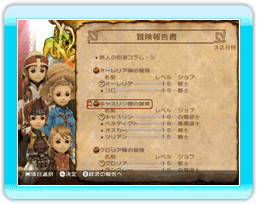
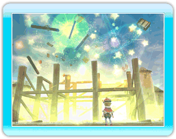
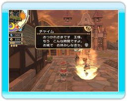

11 |
王様の一日（ゲームの流れ） |
 |
あなたはこの国で王様としてどのように街を発展させていくのか、その時国民が何を必要としているのかを的確に把握し、みずから行動していきます。 一日の流れをつかんで、自分なりのペースで国造りを進めましょう。 この国では常に時間が流れており、時刻によって街は刻々と変化します。日が暮れるとチャイムが迎えに来ますので、画面左上の時計を目安に行動しましょう。  ●朝 王様の一日は朝の報告から始まります。チャイムの報告を見て、国の状態を確認しましょう。報告書にしっかり目を通せば、その日に何をするべきか見えてくるはずです。 また、朝の報告の際には「おふれ」を出し、冒険者にその日の行動の指示を与えます。 |

●昼 冒険者へのおふれを依頼したり、空いている土地に建物を建てたり、住民と会話したりなど、王様にはするべきことがたくさんあります。王国中をくまなく歩き回って、冒険者や住民の話に耳を傾けてみましょう。役立つ情報や国造りの参考になるような話も聞けるかもしれません。 また、国民がどのように一日を過ごしているのかを観察してみるのも面白いでしょう。 |

●日没 日が暮れるとチャイムが迎えに来て、一日が終わります（夜になる前に、自分から休んでその日を終わらせることも可能です）。 王国に幸せがあふれ、家庭円満な家が増えると、王様の就寝時間が遅くなり活動できる時間が長くなります。 |
 |
 |
 |